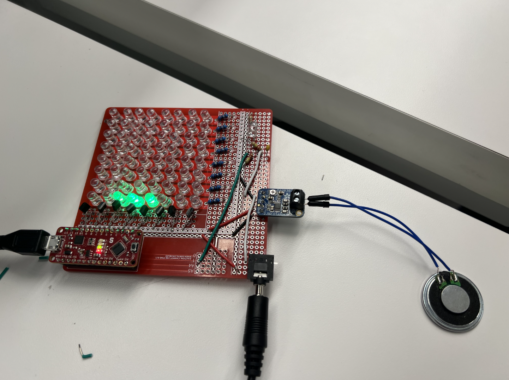

LED Matrix

With a partner, I created a 8x8 dot-matrix display using LED multiplexing. I also incorporated an Arduino, using a pMOS transistor to drive the appropriate amount of current to the rest of the circuit. The goal was to use the Arduino to control the LEDs, and create a fun interactive display. We added an audio jack to route audio from another device, an Adafruit audio amplifier connected to a small speaker, and a biasing circuit. We routed this audio to our Arduino's ADC, and wrote code to turn on LEDs in response to the frequency of whatever song we chose. I learned a lot about analyzing audio, with tools like an AD2 (Analog Discovery 2), and how to leverage Arduino FFT libraries to programmatically achieve cool-audio based outputs. The library often didn't work as expected, so I did a lot of debugging work with both the hardware and software. There were lots of minor things that initially tripped us up, from outdated library code to sneaky solder joints. I also learned about circuit design, and how to bring together lots of individual components. I hope you enjoy the demo (and sing along)!
